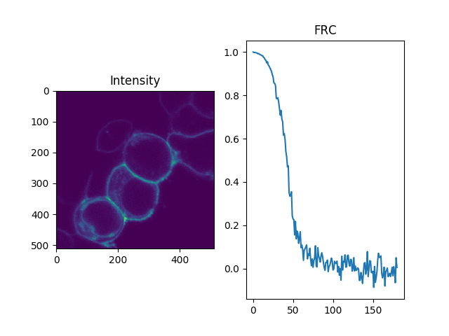

Note
Click here to download the full example code
Fourier ring correlation of images¶
Estimation of the image resolution¶
In electron microscopy the Fourier Ring Correlation (FRC) is widely used as a measure for the resolution of an image. This very practical approach for a quality measure begins to get traction in fluorescence microscopy. Briefly, the correlation between two subsets of the same images are Fourier transformed and their overlap in the Fourier space is measured. The FRC is the normalised cross-correlation coefficient between two images over corresponding shells in Fourier space transform.
In CLSM usually multiple images of the sample sample are recoded. Thus, the resolution of the image can be estimated by the FRC. Below a few lines of python code are shown that read a CLSM image, split the image into two sets, and plot the FRC of the two subsets is shown for intensity images.
#.. plot:: ../examples/imaging/imaging_frc.py
The above approach is used by the software ChiSurf. In practice, a set of CLSM images can be split into two subsets. The two subsets can be used to estimate the resolution of the image.

from __future__ import annotations
import numpy as np
import pylab as p
import tttrlib
def compute_frc(
image_1: np.ndarray,
image_2: np.ndarray,
bin_width: int = 2.0
):
""" Computes the Fourier Ring/Shell Correlation of two 2-D images
:param image_1:
:param image_2:
:param bin_width:
:return:
"""
image_1 = image_1 / np.sum(image_1)
image_2 = image_2 / np.sum(image_2)
f1, f2 = np.fft.fft2(image_1), np.fft.fft2(image_2)
af1f2 = np.real(f1 * np.conj(f2))
af1_2, af2_2 = np.abs(f1)**2, np.abs(f2)**2
nx, ny = af1f2.shape
x = np.arange(-np.floor(nx / 2.0), np.ceil(nx / 2.0))
y = np.arange(-np.floor(ny / 2.0), np.ceil(ny / 2.0))
distances = list()
wf1f2 = list()
wf1 = list()
wf2 = list()
for xi, yi in np.array(np.meshgrid(x,y)).T.reshape(-1, 2):
distances.append(np.sqrt(xi**2 + xi**2))
xi = int(xi)
yi = int(yi)
wf1f2.append(af1f2[xi, yi])
wf1.append(af1_2[xi, yi])
wf2.append(af2_2[xi, yi])
bins = np.arange(0, np.sqrt((nx//2)**2 + (ny//2)**2), bin_width)
f1f2_r, bin_edges = np.histogram(
distances,
bins=bins,
weights=wf1f2
)
f12_r, bin_edges = np.histogram(
distances,
bins=bins,
weights=wf1
)
f22_r, bin_edges = np.histogram(
distances,
bins=bins,
weights=wf2
)
density = f1f2_r / np.sqrt(f12_r * f22_r)
return density, bin_edges
filename = '../../test/data/imaging/leica/sp8/da/G-28_C-28_S1_6_1.ptu'
data = tttrlib.TTTR(filename, 'PTU')
line_factor = 1
reading_parameter = {
"tttr_data": data,
"marker_frame_start": [4, 6],
"marker_line_start": 1,
"marker_line_stop": 2,
"marker_event_type": 15,
# if zero the number of pixels is the set to the number of lines
"n_pixel_per_line": 512 * line_factor,
"reading_routine": 'SP8',
"channels": [1],
"fill": True
}
clsm_image = tttrlib.CLSMImage(**reading_parameter)
fig, ax = p.subplots(nrows=1, ncols=2, sharex=False, sharey=False)
ax[0].set_title('Intensity')
ax[1].set_title('FRC')
img = clsm_image.intensity
im1 = img[::2].sum(axis=0)
im2 = img[1::2].sum(axis=0)
frc, frc_bins = compute_frc(im1, im2)
ax[1].plot(frc, label="Intensity")
ax[0].imshow(img.mean(axis=0))
p.show()
Total running time of the script: ( 0 minutes 4.151 seconds)